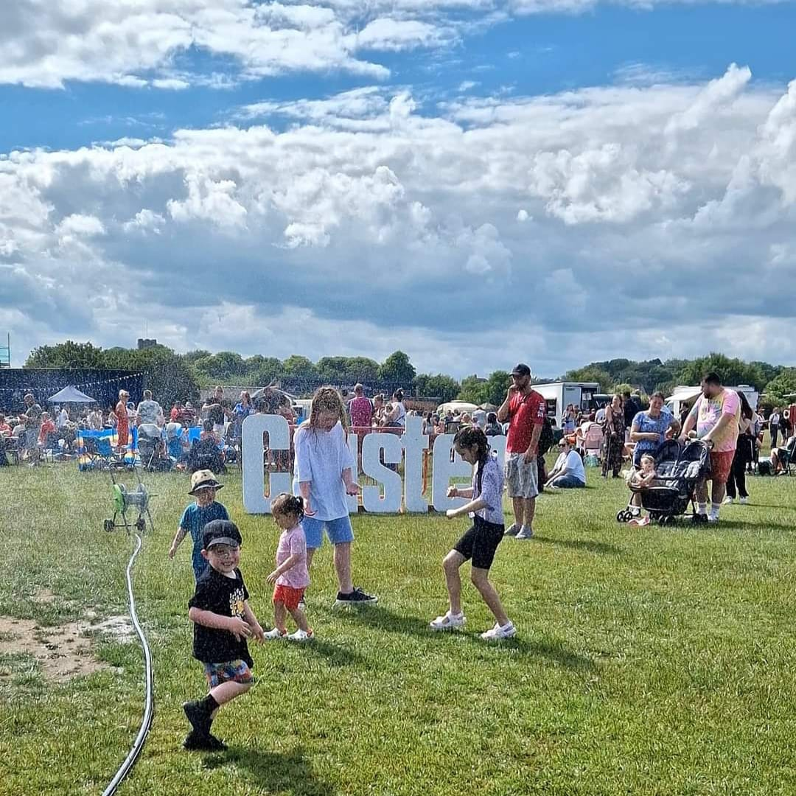
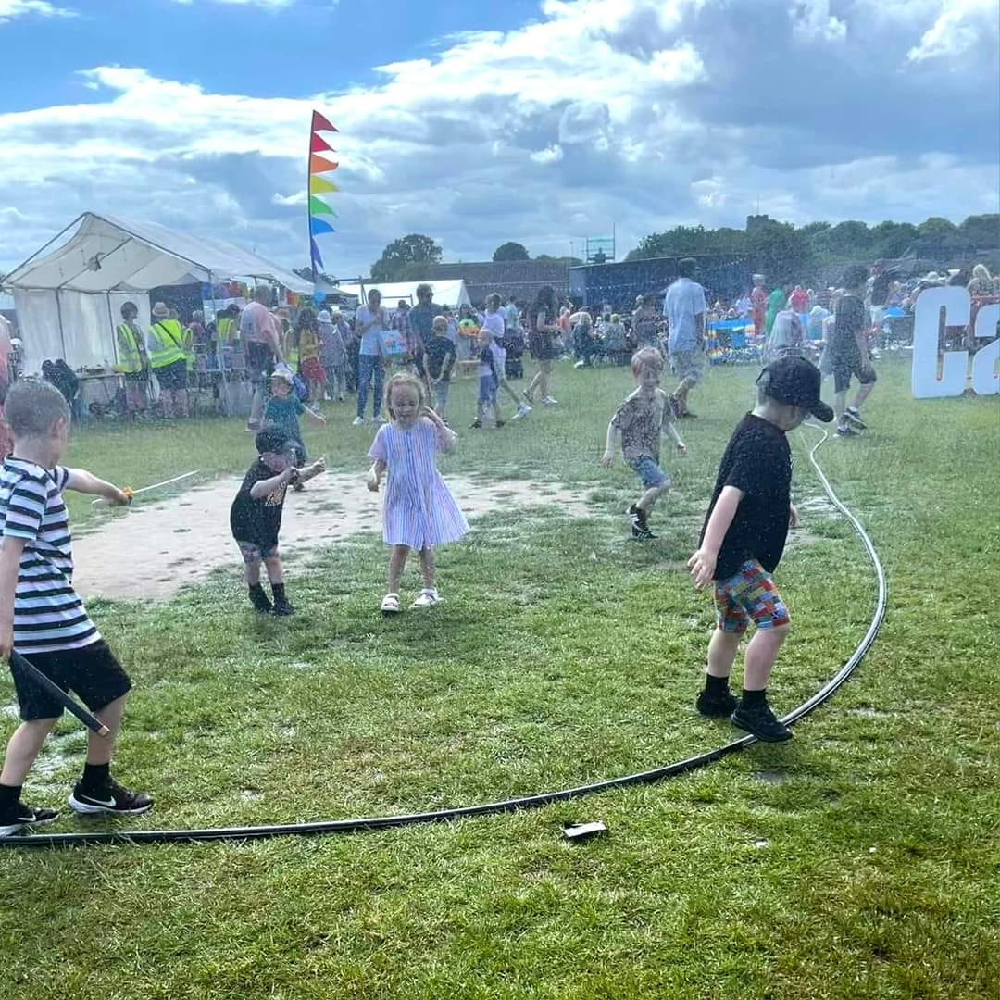
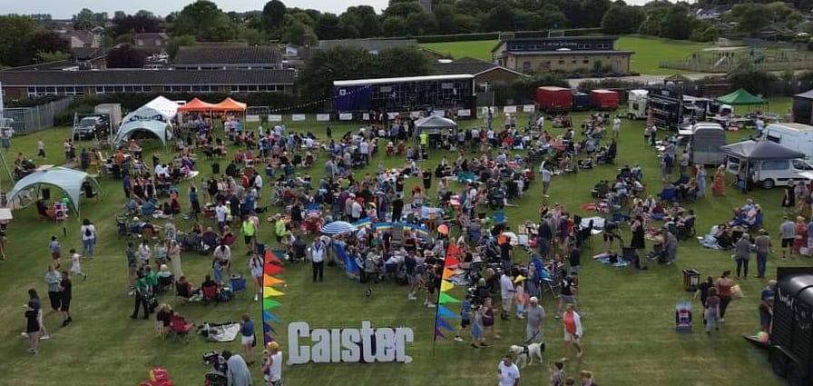
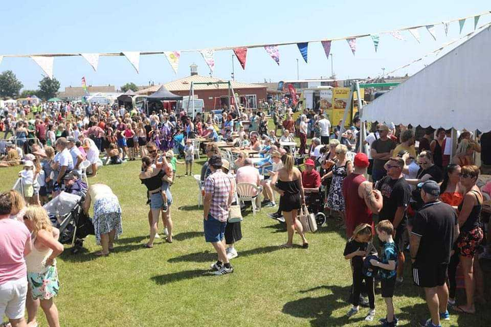
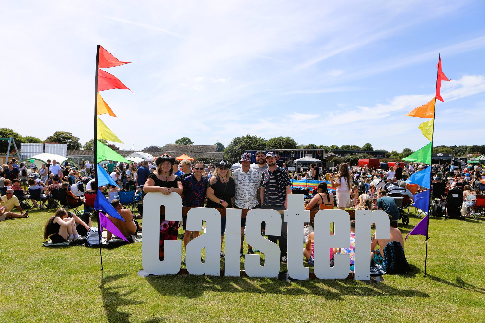
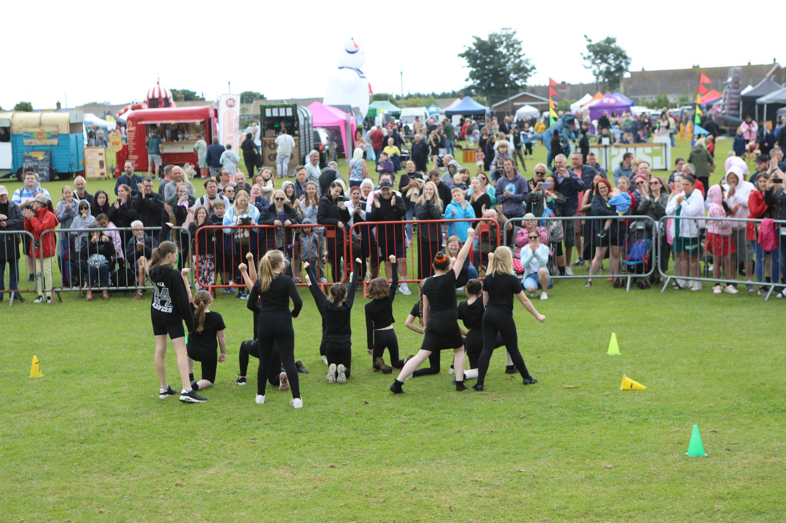
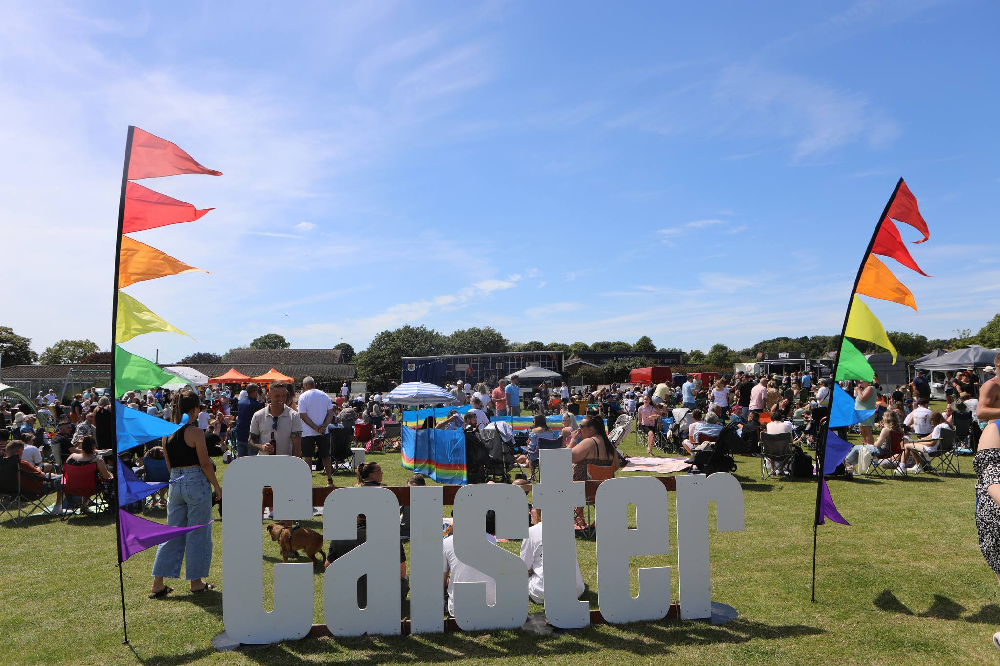
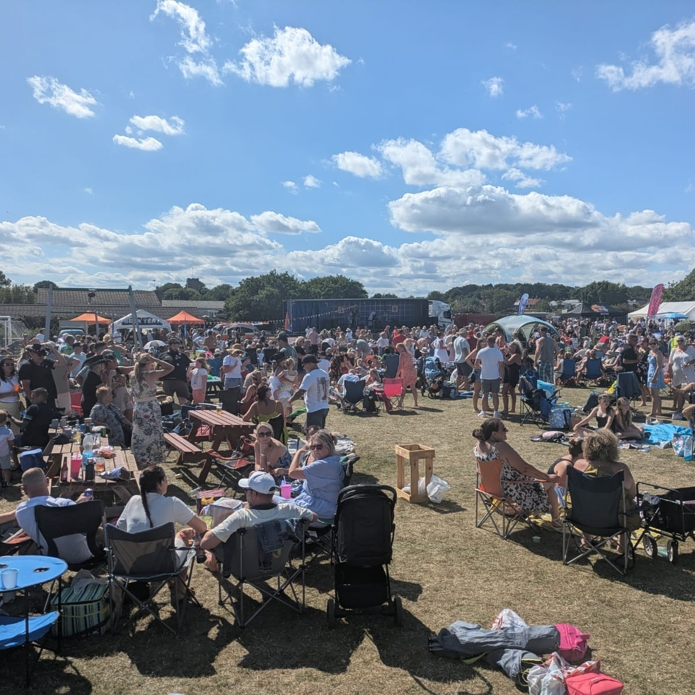
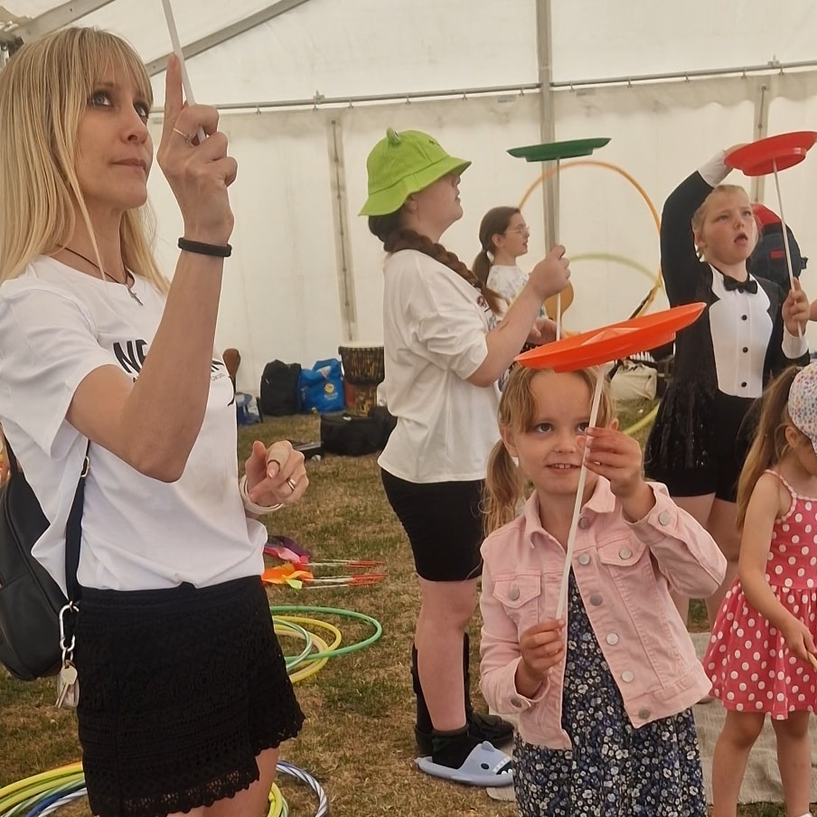
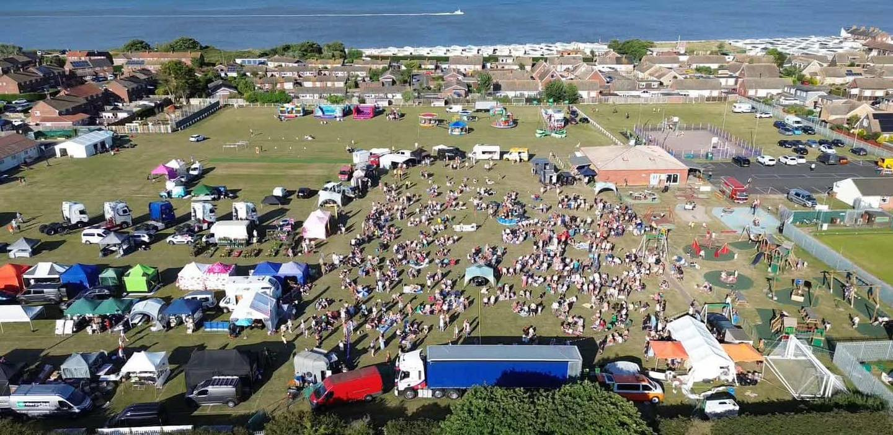

A look back at the smiles, sunshine & community spirit from previous years










Got photos from a previous Caister Festival? We'd love to feature them here — get in touch and share your memories with the community!
Share Your Photos →